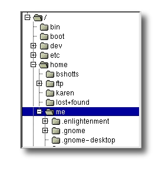

The first thing we need to learn to do (besides just typing) is how to navigate the file system on our Linux system. In this chapter we will introduce the following commands:
我们需要学习的第一件事（除了打字之外）是如何在 Linux 文件系统中跳转。 在这一章节中，我们将介绍以下命令：
pwd - Print name of current working directory
cd - Change directory
ls - List directory contents
pwd — 打印出当前工作目录名
cd — 更改目录
ls — 列出目录内容
Like Windows, a Unix-like operating system such as Linux organizes its files in what is called a hierarchical directory structure. This means that they are organized in a tree-like pattern of directories (sometimes called folders in other systems), which may contain files and other directories. The first directory in the file system is called the root directory. The root directory contains files and subdirectories, which contain more files and subdirectories and so on and so on.
类似于 Windows，一个“类 Unix” 的操作系统，比如说 Linux，以分层目录结构来组织所有文件。 这就意味着所有文件组成了一棵树型目录（有时候在其它系统中叫做文件夹）， 这个目录树可能包含文件和其它的目录。文件系统中的第一级目录称为根目录。 根目录包含文件和子目录，子目录包含更多的文件和子目录，依此类推。
Note that unlike Windows, which has a separate file system tree for each storage device, Unix-like systems such as Linux always have a single file system tree, regardless of how many drives or storage devices are attached to the computer. Storage devices are attached (or more correctly, mounted) at various points on the tree according to the whims of the system administrator, the person (or persons) responsible for the maintenance of the system.
注意(类 Unix 系统)不像 Windows ，每个存储设备都有一个独自的文件系统。类 Unix 操作系统， 比如 Linux，总是只有一个单一的文件系统树，不管有多少个磁盘或者存储设备连接到计算机上。 根据负责维护系统安全的系统管理员的兴致，存储设备连接到（或着更精确些，是挂载到）目录树的各个节点上。
Most of us are probably familiar with a graphical file manager which represents the file system tree as in Figure 1. Notice that the tree is usually shown upended, that is, with the root at the top and the various branches descending below.

图1: 由图形化文件管理器显示的文件系统树
大多数人都可能熟悉如图1所示描述文件系统树的图形文件管理器。注意， 通常这是一棵 倒置的树，也就是说，树根在最上面，而各个枝干在下面展开。
However, the command line has no pictures, so to navigate the file system tree we need to think of it in a different way.
然而，命令行没有图片，所以我们需要考虑用不同的方法，在文件系统树中跳转。
Imagine that the file system is a maze shaped like an upside-down tree and we are able to stand in the middle of it. At any given time, we are inside a single directory and we can see the files contained in the directory and the pathway to the directory above us (called the parent directory) and any subdirectories below us. The directory we are standing in is called the current working directory. To display the current working directory, we use the pwd (print working directory) command.
把文件系统想象成一个迷宫形状，就像一棵倒立的大树，我们站在迷宫的中间位置。 在任意时刻，我们处于一个目录里面，我们能看到这个目录包含的所有文件， 以及通往上面目录（父目录）的路径，和下面的各个子目录。我们所在的目录则称为 当前工作目录。我们使用 pwd（print working directory(的缩写)）命令，来显示当前工作目录。
[me@linuxbox ~]$ pwd
/home/me
When we first log in to our system (or start a terminal emulator session) our current working directory is set to our home directory. Each user account is given its own home directory and when operating as a regular user, the home directory is the only place the user is allowed to write files.
当我们首次登录系统（或者启动终端仿真器会话）后，当前工作目录是我们的家目录。 每个用户都有他自己的家目录，当用户以普通用户的身份操控系统时，家目录是唯一 允许用户对文件进行写入的地方。
To list the files and directories in the current working directory, we use the ls command.
列出一个目录包含的文件及子目录，使用 ls 命令。
[me@linuxbox ~]$ ls
Desktop Documents Music Pictures Public Templates Videos
Actually, we can use the ls command to list the contents of any directory, not just the current working directory, and there are many other fun things it can do as well. We’ll spend more time with ls in the next chapter.
实际上，用 ls 命令可以列出任一个目录的内容，而不只是当前工作目录的内容。 ls 命令还能完成许多有趣的事情。在下一章节，我们将介绍更多关于 ls 的知识。
To change your working directory (where we are standing in our tree-shaped maze) we use the cd command. To do this, type cd followed by the pathname of the desired working directory. A pathname is the route we take along the branches of the tree to get to the directory we want. Pathnames can be specified in one of two different ways; as absolute pathnames or as relative pathnames. Let’s deal with absolute pathnames first.
要更改工作目录（此刻，我们站在树形迷宫里面），我们用 cd 命令。输入 cd, 然后输入你想要去的工作目录的路径名。路径名就是沿着目录树的分支 到达想要的目录期间所经过的路线。路径名可通过两种方式来指定，一种是绝对路径， 另一种是相对路径。我们先来介绍绝对路径。
An absolute pathname begins with the root directory and follows the tree branch by branch until the path to the desired directory or file is completed. For example, there is a directory on your system in which most of your system’s programs are installed. The pathname of the directory is /usr/bin. This means from the root directory (represented by the leading slash in the pathname) there is a directory called “usr” which contains a directory called “bin”.
绝对路径开始于根目录，紧跟着目录树的一个个分支，一直到达所期望的目录或文件。 例如，你的系统中有一个目录，大多数系统程序都安装在这个目录下。这个目录的 路径名是 /usr/bin。它意味着从根目录（用开头的“/”表示）开始，有一个叫 “usr” 的 目录包含了目录 “bin”。
[me@linuxbox ~]$ cd /usr/bin
[me@linuxbox bin]$ pwd
/usr/bin
[me@linuxbox bin]$ ls
...Listing of many, many files ...
Now we can see that we have changed the current working directory to /usr/bin and that it is full of files. Notice how the shell prompt has changed? As a convenience, it is usually set up to automatically display the name of the working directory.
我们把工作目录转到 /usr/bin 目录下，里面装满了文件。注意 shell 提示符是怎样改变的吗？ 为了方便，通常终端提示符自动显示工作目录名。
Where an absolute pathname starts from the root directory and leads to its destination, a relative pathname starts from the working directory. To do this, it uses a couple of special symbols to represent relative positions in the file system tree. These special symbols are “.” (dot) and “..” (dot dot).
绝对路径从根目录开始，直到它的目的地，而相对路径开始于工作目录。 为了做到这个（用相对路径表示）， 我们在文件系统树中用一对特殊符号来表示相对位置。 这对特殊符号是 “.” (点) 和 “..” (点点)。
The “.” symbol refers to the working directory and the “..” symbol refers to the working directory’s parent directory. Here is how it works. Let’s change the working directory to /usr/bin again:
符号 “.” 指的是工作目录，”..” 指的是工作目录的父目录。下面的例子说明怎样使用它。 让我们再次把工作目录切换到 /usr/bin：
[me@linuxbox ~]$ cd /usr/bin
[me@linuxbox bin]$ pwd
/usr/bin
Okay, now let’s say that we wanted to change the working directory to the parent of /usr/bin which is /usr. We could do that two different ways. Either with an absolute pathname:
好了，比方说我们想更改工作目录到 /usr/bin 的父目录 /usr。可以通过两种方法来实现。可以使用绝对路径名：
[me@linuxbox bin]$ cd /usr
[me@linuxbox usr]$ pwd
/usr
Or, with a relative pathname:
或者， 也可以使用相对路径：
[me@linuxbox bin]$ cd ..
[me@linuxbox usr]$ pwd
/usr
Two different methods with identical results. Which one should we use? The one that requires the least typing!
两种不同的方法，一样的结果。我们应该选哪一个呢？ 选输入量最少的那个！
Likewise, we can change the working directory from /usr to /usr/bin in two different ways. Either using an absolute pathname:
同样地，从目录 /usr/ 到 /usr/bin 也有两种途径。可以使用绝对路径：
[me@linuxbox usr]$ cd /usr/bin
[me@linuxbox bin]$ pwd
/usr/bin
Or, with a relative pathname:
或者，也可以用相对路径：
[me@linuxbox usr]$ cd ./bin
[me@linuxbox bin]$ pwd
/usr/bin
Now, there is something important that I must point out here. In almost all cases, you can omit the “./”. It is implied. Typing:
有一件很重要的事，我必须指出来。在几乎所有的情况下，你可以省略”./”。它是隐含地。输入：
[me@linuxbox usr]$ cd bin
does the same thing. In general, if you do not specify a pathname to something, the working directory will be assumed.
实现相同的效果，如果不指定一个文件的目录，那它的工作目录会被假定为当前工作目录。
In table 3-1 we see some useful ways the current working directory can be quickly changed.
在表3-1中，列举出了一些快速改变当前工作目录的有效方法。
| Shortcut | Result |
|---|---|
| cd | Changes the working directory to your home directory. |
| cd - | Changes the working directory to the previous working directory. |
| cd ~user_name | Changes the working directory to the home directory of user_name. For example, cd ~bob will change the directory to the home directory of user “bob.” |
| 快捷键 | 运行结果 |
|---|---|
| cd | 更改工作目录到你的家目录。 |
| cd - | 更改工作目录到先前的工作目录。 |
| cd ~user_name | 更改工作目录到用户家目录。例如, cd ~bob 会更改工作目录到用户“bob”的家目录。 |
Important Facts About Filenames
Filenames that begin with a period character are hidden. This only means that ls will not list them unless you say ls -a. When your account was created, several hidden files were placed in your home directory to configure things for your account. Later on we will take a closer look at some of these files to see how you can customize your environment. In addition, some applications place their configuration and settings files in your home directory as hidden files.
Filenames and commands in Linux, like Unix, are case sensitive. The filenames “File1” and “file1” refer to different files.
Linux has no concept of a “file extension” like some other operating systems. You may name files any way you like. The contents and/or purpose of a file is determined by other means. Although Unix-like operating system don’t use file extensions to determine the contents/purpose of files, some application programs do.
Though Linux supports long filenames which may contain embedded spaces and punctuation characters, limit the punctuation characters in the names of files you create to period, dash, and underscore. Most importantly, do not embed spaces in filenames. If you want to represent spaces between words in a filename, use underscore characters. You will thank yourself later.
关于文件名的重要规则
以 “.” 字符开头的文件名是隐藏文件。这仅表示，ls 命令不能列出它们， 用 ls -a 命令就可以了。当你创建帐号后，几个配置帐号的隐藏文件被放置在 你的家目录下。稍后，我们会仔细研究一些隐藏文件，来定制你的系统环境。 另外，一些应用程序也会把它们的配置文件以隐藏文件的形式放在你的家目录下面。
文件名和命令名是大小写敏感的。文件名 “File1” 和 “file1” 是指两个不同的文件名。
Linux 没有“文件扩展名”的概念，不像其它一些系统。可以用你喜欢的任何名字 来给文件起名。文件内容或用途由其它方法来决定。虽然类 Unix 的操作系统， 不用文件扩展名来决定文件的内容或用途，但是有些应用程序会。
虽然 Linux 支持长文件名，文件名可能包含空格，标点符号，但标点符号仅限 使用 “.”，“－”，下划线。最重要的是，不要在文件名中使用空格。如果你想表示词与 词间的空格，用下划线字符来代替。过些时候，你会感激自己这样做。